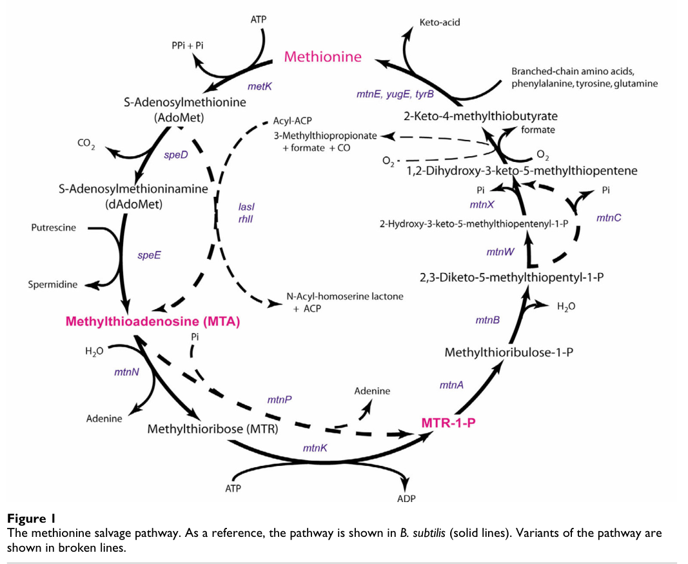

mtnA encodes methylthioribose-1-phosphate isomerase, the first enzyme of the methionine salvage pathway that interconverts MTR-1-phosphate and methylthioribulose-1-phosphate.
| GO Term | Evidence | Action | Reason |
|---|---|---|---|
|
GO:0046523
S-methyl-5-thioribose-1-phosphate isomerase activity
|
IEA
GO_REF:0000120 |
ACCEPT |
Summary: The methylthioribose-1-phosphate isomerase annotation is the correct core molecular function. Falcon deep research independently confirms this aldose-ketose isomerase reaction and adds primary mechanistic and kinetic evidence from the wider MtnA family.
Reason: UniProt assigns EC 5.3.1.23 and the MTR-1-P to MTRu-1-P isomerization reaction.
Supporting Evidence:
file:PSEPK/mtnA/mtnA-uniprot.txt
Catalyzes the interconversion of methylthioribose-1-phosphate
file:PSEPK/mtnA/mtnA-uniprot.txt
EC=5.3.1.23
file:PSEPK/mtnA/mtnA-goa.tsv
GO:0046523 S-methyl-5-thioribose-1-phosphate isomerase activity
file:PSEPK/mtnA/mtnA-deep-research-falcon.md
encodes a **cytosolic methylthioribose-1-phosphate isomerase (EC 5.3.1.23)** that catalyzes **MTR-1-P → MTRu-1-P**, functioning in the **methionine salvage pathway** recycling MTA-derived intermediates toward methionine
file:PSEPK/mtnA/mtnA-deep-research-falcon.md
Mechanistic work on MtnA highlights conserved residues including **Cys160** and **Asp240** as critical for catalysis and substrate interaction
|
|
GO:0071267
L-methionine salvage
|
IEA
GO_REF:0000104 |
NEW |
Summary: MtnA should be connected to methionine salvage; UniProt carries this upstream as an IEA UniRule GO annotation. The originally cited term GO:0019509 (L-methionine salvage from methylthioadenosine) is now OBSOLETE in GO and is replaced here with the current term GO:0071267 (L-methionine salvage).
Reason: UniProt explicitly places MtnA at step 1 of the methionine salvage pathway from S-methyl-5-thioribose 1-phosphate, and the UniProt DR GO section lists the salvage process as IEA:UniRule. The originally referenced term GO:0019509 is obsolete (verified via OLS; the local GO term cache still carries the pre-obsoletion label, which is why automated validation did not flag it), so this NEW row uses the current replacement GO:0071267 (L-methionine salvage). Falcon deep research corroborates the methionine-salvage pathway placement from cross-bacterial nomenclature and functional studies.
Supporting Evidence:
file:PSEPK/mtnA/mtnA-uniprot.txt
PATHWAY: Amino-acid biosynthesis; L-methionine biosynthesis via salvage
file:PSEPK/mtnA/mtnA-uniprot.txt
step 1/6
file:PSEPK/mtnA/mtnA-deep-research-falcon.md
the nomenclature proposal explicitly defines **mtnA** as the gene encoding the **MTR-1-P isomerase** step at the start of that common segment
|
Q: Is mtnA required for recycling methylthioadenosine-derived sulfur during sulfur limitation in KT2440?
Experiment: Compare growth and methionine-salvage intermediates in wild-type and mtnA knockout strains with methylthioadenosine as the sulfur source.
Type: growth assay and sulfur-metabolite profiling
The research report should be a detailed narrative explaining the function, biological processes, and localization of the gene product. Citations should be given for all claims.
You should prioritize authoritative reviews and primary scientific literature when conducting research. You can supplement
this with annotations you find in gene/protein databases, but these can be outdated or inaccurate.
We are specifically interested in the primary function of the gene - for enzymes, what reaction is catalyzed, and what is the substrate specificity? For transporters, what is the substrate? For structural proteins or adapters, what is the broader structural role? For signaling molecules, what is the role in the pathway.
We are interested in where in or outside the cell the gene product carries out its function.
We are also interested in the signaling or biochemical pathways in which the gene functions. We are less interested in broad pleiotropic effects, except where these elucidate the precise role.
Include evidence where possible. We are interested in both experimental evidence as well as inference from structure, evolution, or bioinformatic analysis. Precise studies should be prioritized over high-throughput, where available.
The requested target corresponds (per UniProt context supplied by the user) to Pseudomonas putida strain KT2440 locus PP_1766, encoding methylthioribose-1-phosphate isomerase (MTR-1-P isomerase; M1Pi), EC 5.3.1.23, annotated as belonging to the eIF-2B alpha/beta/delta–like family (IF-2B-related) (target identity provided by user; family consistency supported by pathway literature noting eIF-2B similarity) (sekowska2004bacterialvariationson pages 5-9).
Limitation: In the retrieved literature corpus, there was no direct primary-literature statement mapping KT2440 mtnA to locus tag PP_1766. Therefore, the PP_1766 mapping is treated as database/curation-based identity (from UniProt) rather than a literature-derived mapping.
Many organisms recycle sulfur-containing metabolites back to methionine through the methionine salvage pathway (MSP). In bacteria, MSP is classically described as processing 5′-methylthioadenosine (MTA) (a byproduct of S-adenosyl-L-methionine/SAM-dependent reactions) into intermediates that ultimately regenerate methionine (sekowska2004bacterialvariationson pages 1-2, sekowska2019revisitingthemethionine pages 7-9).
Entry to the common MSP segment: different organisms convert MTA into MTR-1-P (methylthioribose-1-phosphate) either by:
* phosphorolysis (MtnP) producing MTR-1-P directly, or
* nucleosidase + kinase steps (MtnN then MtnK) producing MTR then MTR-1-P (sekowska2019revisitingthemethionine pages 7-9, sekowska2004bacterialvariationson pages 1-2).
Once MTR-1-P is formed, the “common” MSP segment begins; the nomenclature proposal explicitly defines mtnA as the gene encoding the MTR-1-P isomerase step at the start of that common segment (sekowska2004bacterialvariationson pages 9-12).
A pathway schematic depicting this MSP organization and variants is shown in the Sekowska et al. pathway figure (sekowska2004bacterialvariationson media 7fbe191f, sekowska2004bacterialvariationson media d8fb324a).
MtnA is an aldose–ketose isomerase that interconverts MTR1P (aldose) to MTRu1P (ketose) in the MSP (sekowska2004bacterialvariationson pages 2-5, murkin2024methylthiodribose1phosphateisomeraseuses pages 1-2). This isomerization is highlighted as a pivotal transformation because MTR1P does not readily access a free aldehyde form (due to the phosphate ester), posing a mechanistic challenge compared with canonical aldose–ketose isomerases (murkin2024methylthiodribose1phosphateisomeraseuses pages 1-2, veeramachineni2022covalentadductformation pages 1-2).
A widely noted bioinformatic theme is the structural/evolutionary relationship between bacterial MtnA enzymes and the regulatory subunits of the eukaryotic translation factor eIF2B. Early MSP work explicitly remarked that the B. subtilis mtnA sequence had been annotated as similar to eIF-2B (α subunit) (sekowska2004bacterialvariationson pages 5-9). This is consistent with the user-provided domain/family information for Q88M09.
MtnA (MTR-1-P isomerase) catalyzes:
5-methylthio-D-ribose-1-phosphate (MTR1P) ⇌ 5-methylthio-D-ribulose-1-phosphate (MTRu1P)
This reaction definition appears in both the MSP nomenclature/variation analysis and the recent mechanistic literature (sekowska2004bacterialvariationson pages 2-5, murkin2024methylthiodribose1phosphateisomeraseuses pages 1-2).
The MSP review emphasizes that MtnA can be promiscuous in some organisms, with an archaeal example (Methanocaldococcus jannaschii) where MtnA acts both in MSP and a paralogous 5′-deoxyadenosine catabolism pathway (sekowska2019revisitingthemethionine pages 7-9). This supports the expectation that MtnA-family enzymes may accept related sugar-phosphate substrates in some taxa.
Consistent with this broader theme, a 2024 study on E. coli DHAP shunt metabolism annotated MtnA as “5-methylthioribose-1-phosphate/5-deoxyribose-1-phosphate isomerase (EC 5.3.1.23)”, implying functional activity on closely related 5-deoxy sugar-phosphate substrates in that pathway context (huening2024escherichiacolipossessing pages 2-5). While not specific to P. putida, it supports a plausible biochemical capacity of MtnA-family enzymes for related 5-deoxy-pentose-1-phosphate isomerizations.
Mechanistic work on MtnA highlights conserved residues including Cys160 and Asp240 as critical for catalysis and substrate interaction.
These results collectively support that MtnA activity depends on appropriately protonated/deprotonated catalytic groups and that the conserved cysteine is a central catalytic base/relay.
A ChemRxiv preprint (Apr 2024) proposes that MtnA uses an E2 elimination–tautomerization sequence (a “third mechanism” beyond the two canonical aldose–ketose isomerization mechanisms). This is supported by kinetic isotope effects (2H and 13C), solvent isotope effects, and solvent viscosity effects; the authors again implicate Cys160 as the catalytic base shuttling a proton between C-1 and C-2 (murkin2024methylthiodribose1phosphateisomeraseuses pages 1-2).
Caveat: This 2024 source is a preprint (not peer reviewed) and should be interpreted as a cutting-edge but provisional mechanistic model.
Given the conserved definition of mtnA across bacteria as the MTR-1-P isomerase at the start of the common MSP segment (sekowska2004bacterialvariationson pages 9-12), the most defensible primary functional annotation for Q88M09 (PP_1766) is:
Participation in methionine salvage from MTA-derived intermediates via isomerization of MTR-1-P to MTRu-1-P (sekowska2004bacterialvariationson pages 9-12, sekowska2004bacterialvariationson pages 2-5).
While KT2440-specific experimental studies were not retrieved, genus-level evidence exists:
This supports inference that P. putida KT2440 mtnA likely performs the canonical MSP role, though it is not a substitute for direct KT2440 experimental validation.
No retrieved source provided a direct subcellular localization experiment for bacterial MtnA. However, MtnA functions in small-molecule central metabolism converting soluble sugar phosphates (MTR1P to MTRu1P) (sekowska2004bacterialvariationson pages 2-5, veeramachineni2022covalentadductformation pages 1-2). Such reactions are typically cytosolic in bacteria, and MSP discussions treat the enzymes as intracellular metabolic functions (e.g., cytoplasmic nucleosidase context is discussed in MSP reviews) (sekowska2019revisitingthemethionine pages 7-9).
Functional annotation inference: MtnA is most plausibly a cytosolic enzyme acting on intracellular MTR-1-P generated from MTA salvage. This remains an inference from pathway biochemistry rather than direct localization evidence.
A 2024 Microbiology Spectrum study demonstrates that a DHAP shunt gene cluster comprising Pfs (MtnN-like), MtnK, MtnA, and Ald2 enables extraintestinal pathogenic E. coli to utilize MTA and 5′-deoxyadenosine (5dAdo) (and derived sugars) as growth substrates, reframing certain “methionine salvage–related” modules as carbon and energy metabolism pathways in specific niches (huening2024escherichiacolipossessing pages 1-2, huening2024escherichiacolipossessing pages 2-5).
Key quantitative findings from that study:
* Prevalence of the DHAP shunt cluster: ~42% in sequenced UTI/blood infection isolate datasets vs <0.1% (1/1,376) in pathogenic intestinal isolate datasets (huening2024escherichiacolipossessing pages 1-2).
* Toxicity threshold: MTA/5dAdo/SAH (SAM byproducts) are inhibitory; concentrations >1 mM inhibit E. coli growth (huening2024escherichiacolipossessing pages 1-2, huening2024escherichiacolipossessing pages 2-5).
Relevance to P. putida mtnA: Although this is not P. putida, it is a recent, authoritative demonstration that MtnA-family enzymes can be components of alternative, ecologically relevant pathways processing SAM byproducts beyond strict sulfur recycling.
The 2024 mechanistic preprint proposes a distinct mechanistic paradigm (E2 elimination–tautomerization) for MtnA-catalyzed aldose–ketose isomerization in the face of the “no-free-aldehyde” constraint imposed by a phosphate ester (murkin2024methylthiodribose1phosphateisomeraseuses pages 1-2). This development refines how experts may think about enzyme engineering/inhibitor design for this family.
The MSP review literature explicitly frames nucleoside phosphorolysis and salvage enzymes (including those feeding MSP) as a “rich mine” for metabolic engineering and novel drug target discovery, emphasizing the diversity of pathways that process MTA and related metabolites (sekowska2019revisitingthemethionine pages 7-9). While this statement is general, the 2024 DHAP-shunt work provides a concrete example where such pathways influence growth substrate utilization in clinically relevant lineages (huening2024escherichiacolipossessing pages 1-2).
The DHAP shunt study concludes that this pathway is likely relevant in oxic or TMAO-rich extraintestinal environments based on condition-dependent growth phenotypes (aerobic and TMAO-respiring conditions, but not fermentation/nitrate respiration) (huening2024escherichiacolipossessing pages 1-2). This constitutes a real-world ecological implementation of MtnA-containing salvage modules.
Key quantitative values directly extracted from the retrieved literature include:
mtnA (Q88M09; PP_1766) encodes a cytosolic methylthioribose-1-phosphate isomerase (EC 5.3.1.23) that catalyzes MTR-1-P → MTRu-1-P, functioning in the methionine salvage pathway recycling MTA-derived intermediates toward methionine (sekowska2004bacterialvariationson pages 9-12, sekowska2004bacterialvariationson pages 2-5, sekowska2004bacterialvariationson pages 1-2).
The enzyme’s catalysis relies on conserved active-site features including Cys160 (catalytic base/proton shuttle) and Asp240 (substrate interaction), with reported steady-state parameters and pH dependence from biochemical studies (veeramachineni2022covalentadductformation pages 1-2, veeramachineni2022covalentadductformation pages 5-6). A 2024 preprint proposes a novel E2 elimination–tautomerization mechanism consistent with isotope-effect measurements (murkin2024methylthiodribose1phosphateisomeraseuses pages 1-2).
No retrieved primary study directly tested PP_1766/mtnA mutants or operon context in KT2440. Therefore, KT2440-specific phenotypes and regulation remain unverified in this evidence set; annotation rests on strong cross-bacterial conservation of mtnA function in MSP and family/domain coherence.
| Protein/gene target | Organism / identifier | Enzymatic function / reaction | Pathway context | Mechanistic / kinetic findings | 2024 quantitative stats |
|---|---|---|---|---|---|
| mtnA | Pseudomonas putida KT2440; UniProt Q88M09; locus PP_1766 (UniProt-curated target identity) | Methylthioribose-1-phosphate isomerase; EC 5.3.1.23; catalyzes 5-methylthio-D-ribose-1-phosphate (MTR1P) → 5-methylthio-D-ribulose-1-phosphate (MTRu1P) (sekowska2004bacterialvariationson pages 9-12, murkin2024methylthiodribose1phosphateisomeraseuses pages 1-2, sekowska2004bacterialvariationson pages 2-5) | Canonical role is in the methionine salvage pathway (MSP) downstream of MTA conversion to MTR-1-P; MtnA is the common-pathway isomerase. In some bacteria, related DHAP shunt pathways also use MtnA together with MtnK and aldolase to process MTA/5dAdo-derived sugars (sekowska2004bacterialvariationson pages 9-12, sekowska2019revisitingthemethionine pages 7-9, huening2024escherichiacolipossessing pages 1-2, huening2024escherichiacolipossessing pages 2-5) | Conserved active-site residues implicated include Cys160 (proton shuttle / catalytic base) and Asp240; reported steady-state values kcat ≈ 6.8 ± 0.5 s⁻¹ and kcat/KM ≈ 4.1 ± 0.1 × 10⁴ M⁻¹ s⁻¹; bell-shaped pH-rate profile with apparent pKa ≈ 6.68 and 8.89; 2024 work proposes a novel E2 elimination–tautomerization mechanism rather than canonical aldose–ketose isomerization routes (veeramachineni2022covalentadductformation pages 1-2, veeramachineni2022covalentadductformation pages 5-6, murkin2024methylthiodribose1phosphateisomeraseuses pages 2-3, murkin2024methylthiodribose1phosphateisomeraseuses pages 1-2) | In ExPEC E. coli carrying a DHAP shunt, prevalence was ~42% in sequenced UTI/blood isolates versus <0.1% (1/1,376) in pathogenic intestinal isolates; SAM byproducts including MTA/5dAdo/SAH were reported inhibitory to growth at >1 mM (huening2024escherichiacolipossessing pages 1-2, huening2024escherichiacolipossessing pages 2-5) |
Table: This table condenses the verified identity, biochemical role, pathway placement, mechanistic evidence, and recent quantitative findings most relevant to functional annotation of mtnA/Q88M09. It is useful as a quick-reference evidence summary before the full narrative report.
References
(sekowska2004bacterialvariationson pages 5-9): Agnieszka Sekowska, Valérie Dénervaud, Hiroki Ashida, Karine Michoud, Dieter Haas, Akiho Yokota, and Antoine Danchin. Bacterial variations on the methionine salvage pathway. BMC Microbiology, Mar 2004. URL: https://doi.org/10.1186/1471-2180-4-9, doi:10.1186/1471-2180-4-9. This article has 203 citations and is from a peer-reviewed journal.
(sekowska2004bacterialvariationson pages 9-12): Agnieszka Sekowska, Valérie Dénervaud, Hiroki Ashida, Karine Michoud, Dieter Haas, Akiho Yokota, and Antoine Danchin. Bacterial variations on the methionine salvage pathway. BMC Microbiology, Mar 2004. URL: https://doi.org/10.1186/1471-2180-4-9, doi:10.1186/1471-2180-4-9. This article has 203 citations and is from a peer-reviewed journal.
(sekowska2004bacterialvariationson pages 2-5): Agnieszka Sekowska, Valérie Dénervaud, Hiroki Ashida, Karine Michoud, Dieter Haas, Akiho Yokota, and Antoine Danchin. Bacterial variations on the methionine salvage pathway. BMC Microbiology, Mar 2004. URL: https://doi.org/10.1186/1471-2180-4-9, doi:10.1186/1471-2180-4-9. This article has 203 citations and is from a peer-reviewed journal.
(murkin2024methylthiodribose1phosphateisomeraseuses pages 1-2): Andrew Murkin and Subashi Ubayawardhana. Methylthio-d-ribose-1-phosphate isomerase uses a novel mechanism for aldose–ketose isomerization. ChemRxiv, Apr 2024. URL: https://doi.org/10.26434/chemrxiv-2024-jfd46, doi:10.26434/chemrxiv-2024-jfd46. This article has 1 citations.
(sekowska2004bacterialvariationson pages 1-2): Agnieszka Sekowska, Valérie Dénervaud, Hiroki Ashida, Karine Michoud, Dieter Haas, Akiho Yokota, and Antoine Danchin. Bacterial variations on the methionine salvage pathway. BMC Microbiology, Mar 2004. URL: https://doi.org/10.1186/1471-2180-4-9, doi:10.1186/1471-2180-4-9. This article has 203 citations and is from a peer-reviewed journal.
(sekowska2019revisitingthemethionine pages 7-9): Agnieszka Sekowska, Hiroki Ashida, and Antoine Danchin. Revisiting the methionine salvage pathway and its paralogues. Microbial Biotechnology, 12:77-97, Oct 2019. URL: https://doi.org/10.1111/1751-7915.13324, doi:10.1111/1751-7915.13324. This article has 77 citations and is from a peer-reviewed journal.
(sekowska2004bacterialvariationson media 7fbe191f): Agnieszka Sekowska, Valérie Dénervaud, Hiroki Ashida, Karine Michoud, Dieter Haas, Akiho Yokota, and Antoine Danchin. Bacterial variations on the methionine salvage pathway. BMC Microbiology, Mar 2004. URL: https://doi.org/10.1186/1471-2180-4-9, doi:10.1186/1471-2180-4-9. This article has 203 citations and is from a peer-reviewed journal.
(sekowska2004bacterialvariationson media d8fb324a): Agnieszka Sekowska, Valérie Dénervaud, Hiroki Ashida, Karine Michoud, Dieter Haas, Akiho Yokota, and Antoine Danchin. Bacterial variations on the methionine salvage pathway. BMC Microbiology, Mar 2004. URL: https://doi.org/10.1186/1471-2180-4-9, doi:10.1186/1471-2180-4-9. This article has 203 citations and is from a peer-reviewed journal.
(veeramachineni2022covalentadductformation pages 1-2): Vamsee M. Veeramachineni, Subashi T. Ubayawardhana, and Andrew S. Murkin. Covalent adduct formation in methylthio-d-ribose-1-phosphate isomerase: reaction intermediate or artifact? Biochemistry, 61:1124-1135, May 2022. URL: https://doi.org/10.1021/acs.biochem.2c00142, doi:10.1021/acs.biochem.2c00142. This article has 2 citations and is from a peer-reviewed journal.
(huening2024escherichiacolipossessing pages 2-5): Katherine A. Huening, Joshua T Groves, John A. Wildenthal, F. Tabita, Justin A. North, and Silvia Cardona. escherichia coli possessing the dihydroxyacetone phosphate shunt utilize 5′-deoxynucleosides for growth. Microbiology Spectrum, Apr 2024. URL: https://doi.org/10.1128/spectrum.03086-23, doi:10.1128/spectrum.03086-23. This article has 9 citations and is from a domain leading peer-reviewed journal.
(veeramachineni2022covalentadductformation pages 5-6): Vamsee M. Veeramachineni, Subashi T. Ubayawardhana, and Andrew S. Murkin. Covalent adduct formation in methylthio-d-ribose-1-phosphate isomerase: reaction intermediate or artifact? Biochemistry, 61:1124-1135, May 2022. URL: https://doi.org/10.1021/acs.biochem.2c00142, doi:10.1021/acs.biochem.2c00142. This article has 2 citations and is from a peer-reviewed journal.
(sekowska2004bacterialvariationson pages 12-13): Agnieszka Sekowska, Valérie Dénervaud, Hiroki Ashida, Karine Michoud, Dieter Haas, Akiho Yokota, and Antoine Danchin. Bacterial variations on the methionine salvage pathway. BMC Microbiology, Mar 2004. URL: https://doi.org/10.1186/1471-2180-4-9, doi:10.1186/1471-2180-4-9. This article has 203 citations and is from a peer-reviewed journal.
(huening2024escherichiacolipossessing pages 1-2): Katherine A. Huening, Joshua T Groves, John A. Wildenthal, F. Tabita, Justin A. North, and Silvia Cardona. escherichia coli possessing the dihydroxyacetone phosphate shunt utilize 5′-deoxynucleosides for growth. Microbiology Spectrum, Apr 2024. URL: https://doi.org/10.1128/spectrum.03086-23, doi:10.1128/spectrum.03086-23. This article has 9 citations and is from a domain leading peer-reviewed journal.
(murkin2024methylthiodribose1phosphateisomeraseuses pages 2-3): Andrew Murkin and Subashi Ubayawardhana. Methylthio-d-ribose-1-phosphate isomerase uses a novel mechanism for aldose–ketose isomerization. ChemRxiv, Apr 2024. URL: https://doi.org/10.26434/chemrxiv-2024-jfd46, doi:10.26434/chemrxiv-2024-jfd46. This article has 1 citations.

id: Q88M09
gene_symbol: mtnA
product_type: PROTEIN
status: DRAFT
taxon:
id: NCBITaxon:160488
label: Pseudomonas putida (strain ATCC 47054 / DSM 6125 / CFBP 8728 / NCIMB 11950 / KT2440)
description: mtnA encodes methylthioribose-1-phosphate isomerase, the first enzyme of the methionine salvage pathway that interconverts MTR-1-phosphate and methylthioribulose-1-phosphate.
existing_annotations:
- term:
id: GO:0046523
label: S-methyl-5-thioribose-1-phosphate isomerase activity
evidence_type: IEA
original_reference_id: GO_REF:0000120
review:
summary: The methylthioribose-1-phosphate isomerase annotation is the correct core molecular function. Falcon deep research independently confirms this aldose-ketose isomerase reaction and adds primary mechanistic and kinetic evidence from the wider MtnA family.
action: ACCEPT
reason: UniProt assigns EC 5.3.1.23 and the MTR-1-P to MTRu-1-P isomerization reaction.
supported_by:
- reference_id: file:PSEPK/mtnA/mtnA-uniprot.txt
supporting_text: Catalyzes the interconversion of methylthioribose-1-phosphate
- reference_id: file:PSEPK/mtnA/mtnA-uniprot.txt
supporting_text: EC=5.3.1.23
- reference_id: file:PSEPK/mtnA/mtnA-goa.tsv
supporting_text: "GO:0046523\tS-methyl-5-thioribose-1-phosphate isomerase activity"
- reference_id: file:PSEPK/mtnA/mtnA-deep-research-falcon.md
supporting_text: encodes a **cytosolic methylthioribose-1-phosphate isomerase
(EC 5.3.1.23)** that catalyzes **MTR-1-P → MTRu-1-P**, functioning in the
**methionine salvage pathway** recycling MTA-derived intermediates toward
methionine
- reference_id: file:PSEPK/mtnA/mtnA-deep-research-falcon.md
supporting_text: Mechanistic work on MtnA highlights conserved residues including
**Cys160** and **Asp240** as critical for catalysis and substrate interaction
- term:
id: GO:0071267
label: L-methionine salvage
evidence_type: IEA
original_reference_id: GO_REF:0000104
review:
summary: MtnA should be connected to methionine salvage; UniProt carries this upstream as an IEA UniRule GO annotation. The originally cited term GO:0019509 (L-methionine salvage from methylthioadenosine) is now OBSOLETE in GO and is replaced here with the current term GO:0071267 (L-methionine salvage).
action: NEW
reason: 'UniProt explicitly places MtnA at step 1 of the methionine salvage pathway from S-methyl-5-thioribose 1-phosphate, and the UniProt DR GO section lists the salvage process as IEA:UniRule. The originally referenced term GO:0019509 is obsolete (verified via OLS; the local GO term cache still carries the pre-obsoletion label, which is why automated validation did not flag it), so this NEW row uses the current replacement GO:0071267 (L-methionine salvage). Falcon deep research corroborates the methionine-salvage pathway placement from cross-bacterial nomenclature and functional studies.'
supported_by:
- reference_id: file:PSEPK/mtnA/mtnA-uniprot.txt
supporting_text: 'PATHWAY: Amino-acid biosynthesis; L-methionine biosynthesis via salvage'
- reference_id: file:PSEPK/mtnA/mtnA-uniprot.txt
supporting_text: step 1/6
- reference_id: file:PSEPK/mtnA/mtnA-deep-research-falcon.md
supporting_text: the nomenclature proposal explicitly defines **mtnA** as the
gene encoding the **MTR-1-P isomerase** step at the start of that common
segment
references:
- id: GO_REF:0000104
title: Electronic Gene Ontology annotations created by transferring manual GO annotations to orthologs
findings:
- statement: UniRule propagation supplies the upstream L-methionine salvage pathway annotation visible in the UniProt DR GO section but absent from the fetched GOA TSV.
- id: GO_REF:0000120
title: Combined automated GO annotation using multiple IEA methods
findings:
- statement: Automated EC/Rhea/UniRule mapping supplies the methylthioribose-1-phosphate isomerase annotation.
- id: file:PSEPK/mtnA/mtnA-uniprot.txt
title: UniProtKB reviewed entry for mtnA
findings:
- statement: UniProt identifies MtnA as EC 5.3.1.23, places it at step 1 of methionine salvage, and already carries GO:0019509 as an IEA UniRule GO annotation.
- id: file:PSEPK/mtnA/mtnA-goa.tsv
title: QuickGO GOA annotations for mtnA
findings:
- statement: The fetched GOA table contains the annotations reviewed for mtnA.
- id: file:PSEPK/mtnA/mtnA-deep-research-falcon.md
title: 'Falcon (Edison Scientific) deep research report: Pseudomonas putida KT2440
mtnA (UniProt Q88M09) functional annotation'
findings:
- reference_section_type: OTHER
supporting_text: |-
encodes a **cytosolic methylthioribose-1-phosphate isomerase (EC 5.3.1.23)** that catalyzes **MTR-1-P → MTRu-1-P**, functioning in the **methionine salvage pathway** recycling MTA-derived intermediates toward methionine
- reference_section_type: OTHER
supporting_text: |-
the nomenclature proposal explicitly defines **mtnA** as the gene encoding the **MTR-1-P isomerase** step at the start of that common segment
- reference_section_type: OTHER
supporting_text: |-
Mechanistic work on MtnA highlights conserved residues including **Cys160** and **Asp240** as critical for catalysis and substrate interaction
- reference_section_type: OTHER
supporting_text: |-
kcat ≈ 6.8 ± 0.5 s⁻¹** and **kcat/KM ≈ (4.1 ± 0.1) × 10^4 M⁻¹ s⁻¹**, and a **bell-shaped pH-rate profile** with apparent pKa values **~6.68** and **~8.89**
- reference_section_type: OTHER
supporting_text: |-
MtnA proteins (e.g., *B. subtilis* ykrS renamed mtnA) were annotated as similar to **eukaryotic initiation factor eIF-2B (α subunit)**, cautioning against overinterpretation but confirming the evolutionary relationship between MtnA and eIF2B-like proteins
- reference_section_type: OTHER
supporting_text: |-
MtnA is most plausibly a **cytosolic enzyme** acting on intracellular MTR-1-P generated from MTA salvage
core_functions:
- description: Methylthioribose-1-phosphate isomerase that catalyzes the first committed isomerization step in methionine salvage.
molecular_function:
id: GO:0046523
label: S-methyl-5-thioribose-1-phosphate isomerase activity
directly_involved_in:
- id: GO:0071267
label: L-methionine salvage
supported_by:
- reference_id: file:PSEPK/mtnA/mtnA-uniprot.txt
supporting_text: Catalyzes the interconversion of methylthioribose-1-phosphate
- reference_id: file:PSEPK/mtnA/mtnA-uniprot.txt
supporting_text: L-methionine biosynthesis via salvage
- reference_id: file:PSEPK/mtnA/mtnA-deep-research-falcon.md
supporting_text: encodes a **cytosolic methylthioribose-1-phosphate isomerase
(EC 5.3.1.23)** that catalyzes **MTR-1-P → MTRu-1-P**, functioning in the
**methionine salvage pathway** recycling MTA-derived intermediates toward
methionine
proposed_new_terms: []
suggested_questions:
- question: Is mtnA required for recycling methylthioadenosine-derived sulfur during sulfur limitation in KT2440?
suggested_experiments:
- description: Compare growth and methionine-salvage intermediates in wild-type and mtnA knockout strains with methylthioadenosine as the sulfur source.
experiment_type: growth assay and sulfur-metabolite profiling
{kind=link}